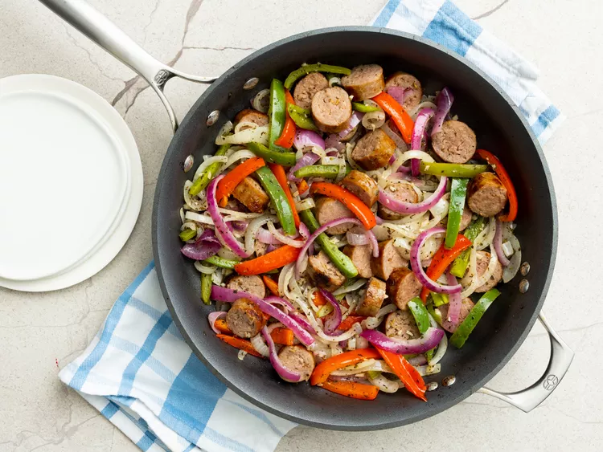

Italian Sausage, Peppers, and Onions

Description
This simple and delicious one-pan sausage and peppers recipe has been used in our family for years and years now.
Serve in a roll, or use as a topping for pizza or pasta. For an extra kick, try using 1/2 sweet Italian sausage
and 1/2 hot sausage!
Ingredients
- 6 (4 ounce) links sweet Italian sausage
- 2 tablespoons butter
- 1 medium yellow onion, sliced
- ½ medium red onion, sliced
- 4 cloves garlic, minced
- 1 large red bell pepper, sliced
- 1 medium green bell pepper, sliced
- 1 teaspoon dried basil
- 1 teaspoon dried oregano
- ¼ cup white wine, or more to taste
Steps
- Cook sausage in a large skillet over medium heat until brown on all sides, 5 to 7 minutes. Remove from
skillet, and slice.
- Melt butter in the same skillet. Stir in onions and garlic, and cook 2 to 3 minutes. Mix in bell peppers,
season with basil and oregano, and stir in 1/4 cup wine. Continue to cook and stir until peppers and onions
are tender, 5 to 7 minutes.
- Return sausage slices to the skillet. Reduce heat to low, cover, and simmer 15 minutes, or until sausage is
heated through, adding more wine if needed.
- Serve hot and enjoy!